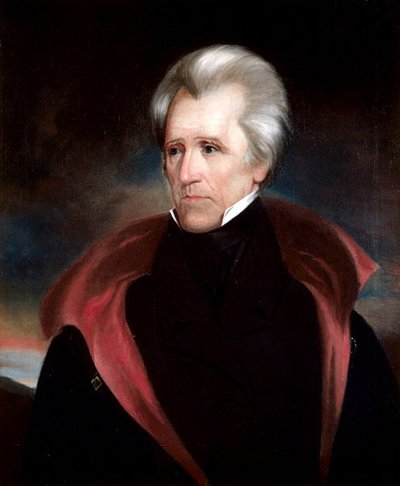
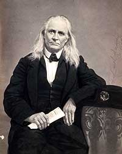

|
Secession was the act by which the eleven southern states
that formed the Confederate States of America withdrew from
the Union. The secession crisis of 1860-1861 led directly to
the outbreak of Civil War. The North's victory in the war
ensured that secession would no longer be a political issue
of any relevance.
There is no provision for secession in the U.S.
Constitution. Rather, secession was a concept that developed
in response to a series of debates over the course of the
antebellum era about the relationship between the states and
the federal government. Which held the ultimate power? If
the answer was the State, then that entity had the right to
secede from the Federal government if its liberties were
endangered. Three events in particular from the late 18th to
the mid-19th century would shape the secessionist position:
The Virginia and Kentucky Resolutions of 1798; The War of
1812; and the Nullification Crisis of 1832-33.
America's first party system was founded in the 1790s,
under the leadership of Thomas Jefferson and Alexander
Hamilton. Jefferson and Hamilton had radically different
ideas on the nature of government. Hamilton, a Federalist,
favored a strong national government, while Jefferson, the
founder of the Democratic Party, was committed to the
supremacy of the states. He articulated his position in the
Virginia and Kentucky Resolutions of 1798, in which he
invented the term "nullification' to describe a state's
right to overrule the Federal government. The Constitution,
argued Jefferson, was a "compact", or agreement, between the
states and the national government. If the compact was
seriously violated by the federal government, the states
could legally withdraw, or secede, from the Union.
America's First Secession Crisis
The first time states threatened to secede was during the
War of 1812. Most New Englanders were opposed to the war,
largely because Great Britain was the most important market
for their manufactured goods. In 1814, representatives from
the states of New England held a convention in Hartford,
Connecticut to discuss their grievances. Disunion was
mentioned prominently on the convention floor. Ultimately,
the issue was tabled after the war's end.
The Nullification Crisis of 1832
The question of secession again appeared in 1832 when the
federal government adopted a tariff, or tax on imported
goods, that Southerners felt was far too high. This was the
|

President Andrew Jackson promised to deal harshly
with South Carolina if the state did not abide by the dictates
of the federal government.
|
third time in eight years the government had adopted a
tariff that was contrary to Southern interests. In response,
the South Carolina legislature passed an ordinance that
nullified the federal tariff and stated that if the national
government enforced the collection of the tariff, South
Carolina would secede. The situation was resolved with a
compromise tariff that South Carolina agreed to accept.
Temporarily the storm subsided, but the nullification crisis
had major long-term implications for making the Palmetto
state a leader of secessionist sentiment. Most importantly,
South Carolinian John C. Calhoun emerged from the crisis a
powerful voice for states' rights and the protection of
slavery. Calhoun was a former nationalist who served in the
House, the Senate, in the cabinet as secretary of war and
secretary of state, and as Andrew Jackson's vice president.
In the 1830s, he turned his formidable intelligence to
constructing a rationale for ensuring the perpetuation of
slavery in a Union he perceived to be increasingly hostile
to the minority slaveholders. Rejecting the current
two-party system, Calhoun advocate a southern sectional
party based on states rights that would be devoted to
protecting that region's "peculiar institution." Failing to
persuade his fellow southerners to abandon the Democratic
Party, Calhoun became increasingly pessimistic about the
fate of the South within the Union. For him, secession was a
logical and legal process should it become necessary.
The Fire-Eaters
By the 1840s, Southerners influenced by Calhoun had
developed an intellectual justification for secession. The
1850s brought constant conflict over the future of slavery.
Most Southerners felt that it was important that slavery
expand to the territories to sustain the balance of power
between slave and free states in the federal government.
Many believed that slavery should be legal everywhere in the
nation, even in Northern states that had banned the
institution. The majority of Northerners felt very
differently. They were willing to allow slavery to remain
where it already was, but wanted to reserve the territories
for free labor only. In response to this attitude, a small
group of rabid secessionists, called Fire-Eaters, began to
loudly advocate the dissolution of the Union in order to
defend and preserve slavery and states' rights. In 1860,
Abraham Lincoln was elected president on a Republican
platform committed to stopping the spread of slavery in the
territories. Prominent Fire-Eaters, such as William Lowndes
|

Edmund Ruffin was so passionate an advocate for
secession that he was given the honor of firing the first shot at
Fort Sumter.
|
Yancey of Alabama, Edmund Ruffin of Virginia, and Robert
Barnwell Rhett, Sr., of South Carolina, saw Lincoln and the
party he represented as deeply hostile to Southern slave
holding interests. Throughout the fall and winter of 1860
they worked hard to dissolve the Union. They had compelling
arguments, all of which centered on the Republicans' desire
to use the federal government's power to deny the property
rights of Southerners.
The Fire-Eaters faced significant obstacles. The wealthy
states of the upper South like Virginia, Tennessee and
Kentucky were not interested in seceding. They wanted to
watch and wait to see if they could forge a compromise that
would be to their advantage. In the lower South, it was not
clear that the majority of non-slave holding farmers were
willing to support secession to save an institution they had
no financial stake in preserving. There were also a
substantial number of "cooperationists" in the lower South
that favored continuing negotiations with the federal
government. They argued that secession should be seen only
as a last resort.
South Carolina Secedes
Southern radicals knew that they had to manage things
very carefully or they would lose their momentum and
secession would fail. The fire-eaters chose to focus their
attentions on South Carolina, in hopes that the state's
leaders could be convinced to secede quickly and decisively.
The Palmetto State was a natural choice to lead the
secession movement. It had been the home of John C. Calhoun
and a center of secessionist sentiment for more than three
decades. Beyond that, South Carolina's constitution was
unusual in that it required the state legislature to choose
presidential electors. As such, when Abraham Lincoln won the
election of 1860, most Southern legislatures had adjourned
for winter, but the South Carolina legislature was still in
session pending the results. They immediately approved
Governor William Henry Gist's call for special elections to
choose representatives for a secession convention.
South Carolina's secession elections made the state's
departure from the Union a certainty. Strong opponents of
secession declined to run for seats at the convention,
knowing that they would be defeated. Cooperationists
dismissed the convention as largely meaningless, believing
that secession would only happen if a group of Southern
states agreed to secede together. When the secession
convention was seated on December 17, 1860, it was populated
entirely by fire-eaters. A committee was appointed to draw
up a secession resolution, and in short order they completed
their work. The convention voted unanimously on December
20th to endorse the resolution that declared the union
between the states to be "dissolved".
South Carolina's bold move gave a big boost to the
efforts of fire-eaters in the other states of the Lower

Special edition of the Charleston Mercury
announcing the decision made by the state's leaders to secede.
|
South. In each state, the same basic pattern had to be
followed: elections, a secession convention, and the
adoption of an ordinance of secession. In no state was
secession as much of a certainty as in South Carolina, and
in some states the issue was hotly contested. However, the
inspiration provided by the Palmetto State, as well as
skillful politicking by Fire-Eaters, eventually convinced
the rest of the lower South to join South Carolina in
seceding. By February 1, 1861, Mississippi, Florida,
Alabama, Georgia, Louisiana, and Texas had called secession
conventions and voted to leave the Union. On February 4,
delegates from the seceded states met to begin drawing up a
Constitution for the new nation.
The Upper South Secedes
The states of the upper South hesitated much more than
their sisters in the Lower South. Pro-unionist sentiment,
northern commercial ties, and a much lower number of slaves
made secession more problematic. For the federal government,
the key to retaining the loyalty of the upper southern
states was a non-coercive policy. Compromise between north
and south was discussed and rejected, and as time dragged
on, hope faded. Supplies began to run out for the small
Union garrison at Fort Sumter located in Charleston Harbor
in South Carolina. President Lincoln weighed his options,
keenly aware that popular sentiment in the North heavily
favored re-supplying the fort and keeping it under the
national flag.
On April 6th, Lincoln went public with his decision to
re-supply Fort Sumter, but only with food and other
necessities of survival. President Jefferson Davis could not
abide by this decision, as he was well aware of the symbolic
importance of allowing the North to keep possession of the
fort. So, Davis decided to fire upon Sumter before the
northern ships arrived. On April 12, 1861, Confederate
batteries attacked, and the surrender of the garrison
occurred two days later.
Lincoln responded to the attack on Fort Sumter with a
call for 75,000 troops to put down the insurrection. At this
point, the states of the upper south had a choice between
taking arms against the South and taking arms against the
North. This was an easy decision to make, and shortly
thereafter Virginia left the Union. Over the course of the
five weeks after Fort Sumter, Arkansas, Tennessee, and North
Carolina followed suit. The secession crisis had ended and
the Union was dissolved. The stage was set for the bloodiest
conflict in American history.
Source: Joan Waugh, ed., Facts on File Encyclopedia of American
History: Civil War and Reconstruction, 1856 to 1869 (New York: Facts on
File, 2003), 310-313.
|